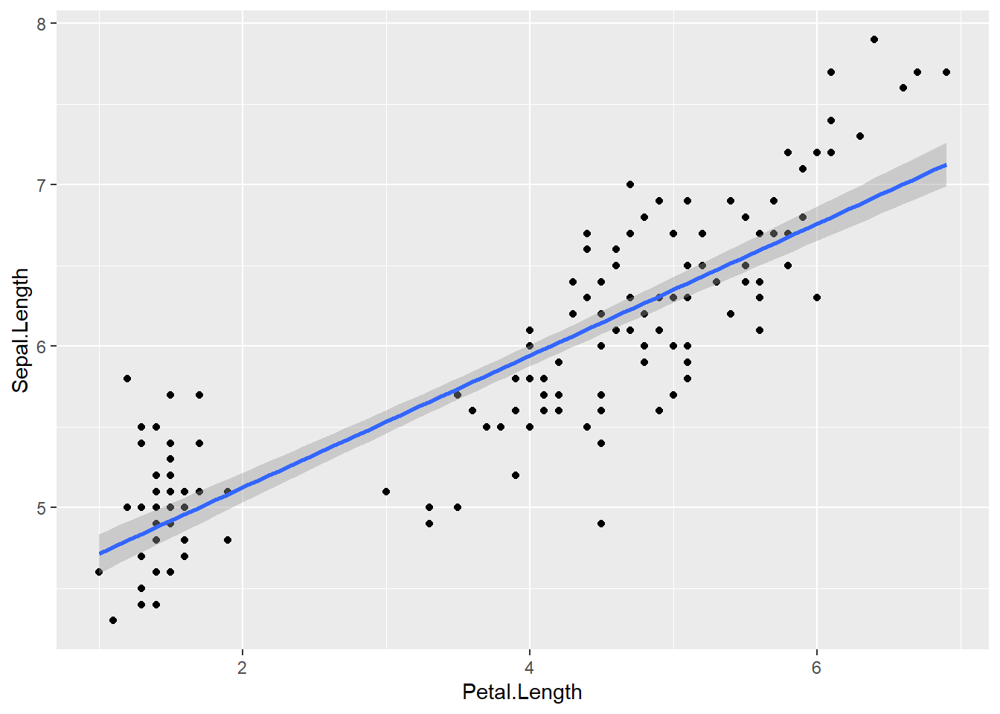
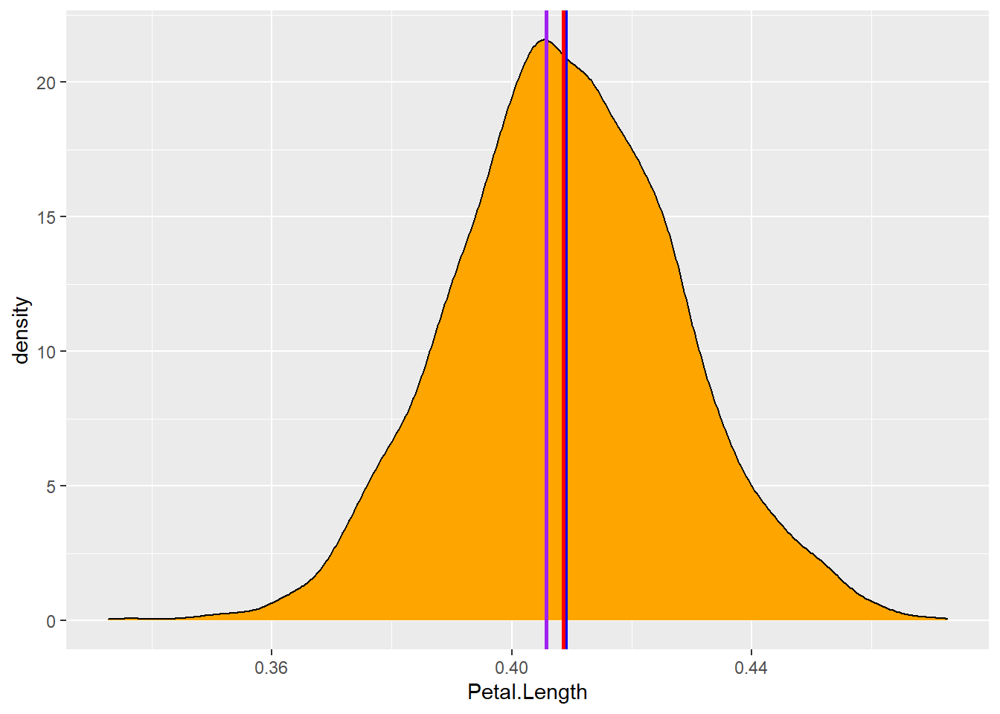
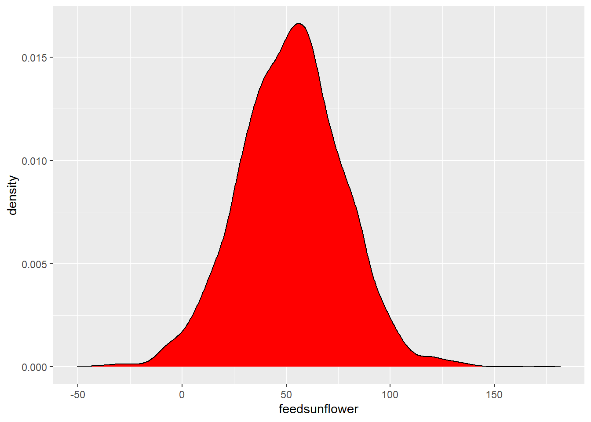
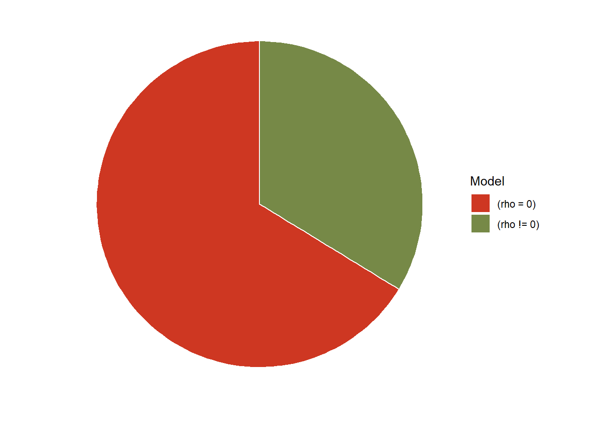
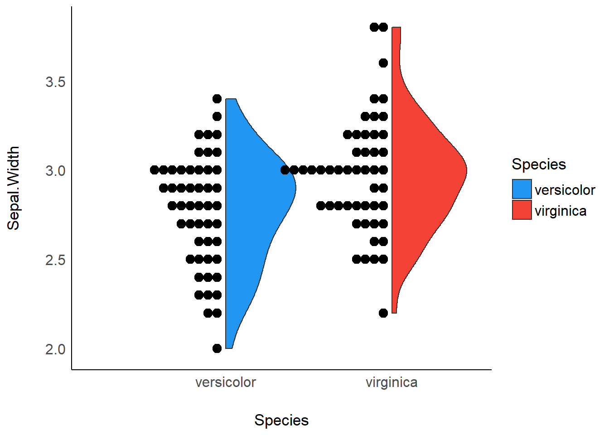

Warning: package 'bayestestR' was built under R version 4.1.3Korte inleiding
De laatste weken lees ik weer regelmatig over de achtergronden, de principes en de voordelen van bayesiaanse onderzoekstechnieken. De update van Statistical Rethinking. A Bayesian Course with Examples in R and Stan (McElreath, 2020) en het nieuwe boek Regression and other stories (Gelman, Hill & Vehtari, 2020) geven veel inspiratie. Daarover later meer. Ondertussen verscheen vorig jaar het R-pakket bayestestR met een hele duidelijke bijbehorende website waarin een aantal uitgangspunten heel duidelijk worden uitgelegd en de voordelen van deze manier van onderzoek doen worden vergeleken met de klassieke onderzoekstechniek. Ik kon het niet laten om een aantal lessen te vertalen. Mogelijk dat ik hier later nog een keer aandacht aan besteed. De website is gebaseerd op twee artikelen waar de wetenschappers naar refereren. Natuurlijk moet ik deze artikelen hier aan het begin noemen.
Makowski, D., Ben-Shachar, M. S., & Lüdecke, D. (2019). bayestestR: Describing Effects and their Uncertainty, Existence and Significance within the Bayesian Framework. Journal of Open Source Software, 4(40), 1541. 10.21105/joss.01541
Makowski, D., Ben-Shachar, M. S., Chen, S. H. A., & Lüdecke, D. (2019). Indices of Effect Existence and Significance in the Bayesian Framework. Frontiers in Psychology 2019;10:2767. 10.3389/fpsyg.2019.02767
Waarom zou je het Bayesiaanse kader gebruiken?
Het Bayesiaanse statistische raamwerk wint snel aan populariteit onder wetenschappers, wat samenhangt met de algemene verschuiving naar open en eerlijke wetenschap. Redenen om de voorkeur te geven aan deze aanpak zijn betrouwbaarheid, nauwkeurigheid (in rommelige data en kleine steekproeven), de mogelijkheid om prior kennis in de analyse te introduceren en, kritisch gezien, de intuïtiviteit van de resultaten en hun rechtstreekse interpretatie (Andrews & Baguley, 2013; Etz & Vandekerckhove, 2016; Kruschke, 2010; Kruschke, Aguinis, & Joo, 2012; Wagenmakers et al., 2018).
In het algemeen wordt de frequentistische aanpak geassocieerd met de focus op null hypothesetests en het misbruik van p-waarden blijkt kritisch bij te dragen aan de reproduceerbaarheidscrisis van psychologische wetenschap (Chambers, Feredoes, Muthukumaraswamy, & Etchells, 2014; Szucs & Ioannidis, 2016). Men is het er algemeen over eens dat de veralgemening van de Bayesiaanse aanpak een manier is om deze problemen te overwinnen (Benjamin et al., 2018; Etz & Vandekerckhove, 2016).
Als we het er eenmaal over eens zijn dat het Bayesiaanse raamwerk de juiste weg is, kun je je vervolgens afvragen wat het Bayesiaanse raamwerk is.
Waar gaat al dat gedoe over?
Wat is het Bayesiaanse kader?
Het aannemen van het Bayesiaanse raamwerk is meer een verschuiving in paradigma dan een verandering in methodologie. Inderdaad, alle gemeenschappelijke statistische procedures (t-tests, correlaties, ANOVA’s, regressies, …) kunnen nog steeds worden uitgevoerd met behulp van het Bayesiaanse raamwerk. Een van de kernverschillen is dat in het frequentische perspectief (de “klassieke” statistiek, met p- en t-waarden, evenals met die rare vrijheidsgraden), de effecten vastliggen (maar onbekend zijn) en data random zijn. Aan de andere kant wordt in het Bayesiaanse inferentieproces, in plaats van schattingen van het “ware effect”, de waarschijnlijkheid van verschillende effecten berekend gegeven de waargenomen gegevens. Dat resulteert in een verdeling van mogelijke waarden voor de parameters, de zogenaamde posterior-distributie.
De onzekerheid in de Bayesiaanse inferentie kan bijvoorbeeld worden samengevat door de mediaan van de verdeling, evenals een reeks waarden van de posterior distributie die de 95% meest waarschijnlijke waarden omvat (het 95% waarschijnlijke interval). Deze kunnen worden beschouwd als de tegenhangers van de punt-schatting en het betrouwbaarheidsinterval in een frequentistisch kader. Om het verschil in interpretatie te illustreren, laat het Bayesiaanse raamwerk toe om te zeggen “gezien de geobserveerde gegevens, heeft het effect een 95% kans om binnen dit bereik te vallen”. Het minder eenvoudige alternatief voor de frequentist zou zijn “wanneer herhaaldelijk betrouwbaarheidsintervallen uit deze reeks gegevens worden berekend, is er een 95% kans dat het effect binnen een bepaald bereik valt”. In wezen geven de Bayesiaanse samplingsalgoritmen (met MCMC-technieken) een waarschijnlijkheidsverdeling (de posterior) van een effect dat compatibel is met de waargenomen gegevens. Zo kan een effect worden beschreven door de posterior verdeling te karakteriseren in relatie tot de centraliteit (punt-schattingen), en gaat het over onzekerheid en het bestaan en de betekenis ervan.
Met andere woorden, als we de ingewikkelde wiskunde achterwege laten, kunnen we zeggen dat:
- De frequentist probeert “het reële effect” in te schatten, bijvoorbeeld, de “echte” waarde van de correlatie tussen x en y. Vandaar dat de modellen van frequentisten een “punt-schatting” opleveren. (d.w.z. één enkele waarde) van de “echte” correlatie (bv. r = 0,42) die wordt geschat op basis van een aantal onduidelijke veronderstellingen (minimaal, aangezien de gegevens willekeurig worden onttrokken van een “ouder”, meestal een normale verdeling).
- De Bayesiaan gaat niet van zoiets uit. De gegevens zijn wat ze zijn. Op basis van deze geobserveerde gegevens (en een eerdere overtuiging over het resultaat) geeft het Bayesiaanse samplingsalgoritme (soms ook wel MCMC sampling genoemd) een waarschijnlijkheidsverdeling (de zogenaamde posterior) van het effect dat compatibel is met de geobserveerde gegevens. Voor de correlatie tussen x en y geeft het een verdeling, die bijvoorbeeld zegt: “het meest waarschijnlijke effect is 0,42, maar deze gegevens zijn ook compatibel met correlaties tussen 0,12 en 0,74”.
- Om onze effecten te karakteriseren is geen behoefte aan p-waarden of andere cryptische indices. We beschrijven gewoon de posterior verdeling van het effect. We kunnen bijvoorbeeld de mediaan, de 89% Credible Interval of andere indices rapporteren.
Met andere woorden, als we de wiskunde even achterwege laten, kunnen we zeggen dat:
Hoewel het doel van dit pakket is het gebruik van Bayesiaanse statistieken te verdedigen, zijn er serieuze argumenten die de frequentie-indexen ondersteunen (zie bijvoorbeeld hier). Zoals altijd is de wereld niet zwart-wit (p < .001).
Nou… hoe werkt het?
Een eenvoudig voorbeeld
Installatie van BayestestR
U kunt bayestestR samen met de hele easystats suite installeren (of alleen bayestestR, omdat de suite installeren bij mij niet werkte) door het volgende uit te voeren: ## A simple example
Laten we ook het pakket rstanarm installeren en laden, die het mogelijk maakt om de Bayesiaanse modellen, evenals de bayestestR, te werken.
Warning: package 'rstanarm' was built under R version 4.1.3Loading required package: RcppWarning: package 'Rcpp' was built under R version 4.1.3This is rstanarm version 2.21.3- See https://mc-stan.org/rstanarm/articles/priors for changes to default priors!- Default priors may change, so it's safest to specify priors, even if equivalent to the defaults.- For execution on a local, multicore CPU with excess RAM we recommend calling options(mc.cores = parallel::detectCores())Traditionele lineaire regressie
Laten we beginnen met een eenvoudige frequentistische lineaire regressie (de lm() functie staat voor lineair model) tussen twee numerieke variabelen, Sepal.Length en Petal.Length uit de beroemde iris-dataset, standaard opgenomen in R.
Call:
lm(formula = Sepal.Length ~ Petal.Length, data = iris)
Residuals:
Min 1Q Median 3Q Max
-1.24675 -0.29657 -0.01515 0.27676 1.00269
Coefficients:
Estimate Std. Error t value Pr(>|t|)
(Intercept) 4.30660 0.07839 54.94 <2e-16 ***
Petal.Length 0.40892 0.01889 21.65 <2e-16 ***
---
Signif. codes: 0 '***' 0.001 '**' 0.01 '*' 0.05 '.' 0.1 ' ' 1
Residual standard error: 0.4071 on 148 degrees of freedom
Multiple R-squared: 0.76, Adjusted R-squared: 0.7583
F-statistic: 468.6 on 1 and 148 DF, p-value: < 2.2e-16Deze analyse laat een significante (wat dat ook moge betekenen) en een positieve (met een coëfficiënt van 0,41) lineaire relatie zien tussen de twee variabelen.
Het aanpassen en interpreteren van frequentiemodellen is zo eenvoudig dat het duidelijk is dat mensen het gebruiken in plaats van het Bayesiaanse kader… toch?
Niet meer.
Bayesiaanse lineaire regressie
SAMPLING FOR MODEL 'continuous' NOW (CHAIN 1).
Chain 1:
Chain 1: Gradient evaluation took 0 seconds
Chain 1: 1000 transitions using 10 leapfrog steps per transition would take 0 seconds.
Chain 1: Adjust your expectations accordingly!
Chain 1:
Chain 1:
Chain 1: Iteration: 1 / 2000 [ 0%] (Warmup)
Chain 1: Iteration: 200 / 2000 [ 10%] (Warmup)
Chain 1: Iteration: 400 / 2000 [ 20%] (Warmup)
Chain 1: Iteration: 600 / 2000 [ 30%] (Warmup)
Chain 1: Iteration: 800 / 2000 [ 40%] (Warmup)
Chain 1: Iteration: 1000 / 2000 [ 50%] (Warmup)
Chain 1: Iteration: 1001 / 2000 [ 50%] (Sampling)
Chain 1: Iteration: 1200 / 2000 [ 60%] (Sampling)
Chain 1: Iteration: 1400 / 2000 [ 70%] (Sampling)
Chain 1: Iteration: 1600 / 2000 [ 80%] (Sampling)
Chain 1: Iteration: 1800 / 2000 [ 90%] (Sampling)
Chain 1: Iteration: 2000 / 2000 [100%] (Sampling)
Chain 1:
Chain 1: Elapsed Time: 0.03 seconds (Warm-up)
Chain 1: 0.044 seconds (Sampling)
Chain 1: 0.074 seconds (Total)
Chain 1:
SAMPLING FOR MODEL 'continuous' NOW (CHAIN 2).
Chain 2:
Chain 2: Gradient evaluation took 0 seconds
Chain 2: 1000 transitions using 10 leapfrog steps per transition would take 0 seconds.
Chain 2: Adjust your expectations accordingly!
Chain 2:
Chain 2:
Chain 2: Iteration: 1 / 2000 [ 0%] (Warmup)
Chain 2: Iteration: 200 / 2000 [ 10%] (Warmup)
Chain 2: Iteration: 400 / 2000 [ 20%] (Warmup)
Chain 2: Iteration: 600 / 2000 [ 30%] (Warmup)
Chain 2: Iteration: 800 / 2000 [ 40%] (Warmup)
Chain 2: Iteration: 1000 / 2000 [ 50%] (Warmup)
Chain 2: Iteration: 1001 / 2000 [ 50%] (Sampling)
Chain 2: Iteration: 1200 / 2000 [ 60%] (Sampling)
Chain 2: Iteration: 1400 / 2000 [ 70%] (Sampling)
Chain 2: Iteration: 1600 / 2000 [ 80%] (Sampling)
Chain 2: Iteration: 1800 / 2000 [ 90%] (Sampling)
Chain 2: Iteration: 2000 / 2000 [100%] (Sampling)
Chain 2:
Chain 2: Elapsed Time: 0.033 seconds (Warm-up)
Chain 2: 0.039 seconds (Sampling)
Chain 2: 0.072 seconds (Total)
Chain 2:
SAMPLING FOR MODEL 'continuous' NOW (CHAIN 3).
Chain 3:
Chain 3: Gradient evaluation took 0 seconds
Chain 3: 1000 transitions using 10 leapfrog steps per transition would take 0 seconds.
Chain 3: Adjust your expectations accordingly!
Chain 3:
Chain 3:
Chain 3: Iteration: 1 / 2000 [ 0%] (Warmup)
Chain 3: Iteration: 200 / 2000 [ 10%] (Warmup)
Chain 3: Iteration: 400 / 2000 [ 20%] (Warmup)
Chain 3: Iteration: 600 / 2000 [ 30%] (Warmup)
Chain 3: Iteration: 800 / 2000 [ 40%] (Warmup)
Chain 3: Iteration: 1000 / 2000 [ 50%] (Warmup)
Chain 3: Iteration: 1001 / 2000 [ 50%] (Sampling)
Chain 3: Iteration: 1200 / 2000 [ 60%] (Sampling)
Chain 3: Iteration: 1400 / 2000 [ 70%] (Sampling)
Chain 3: Iteration: 1600 / 2000 [ 80%] (Sampling)
Chain 3: Iteration: 1800 / 2000 [ 90%] (Sampling)
Chain 3: Iteration: 2000 / 2000 [100%] (Sampling)
Chain 3:
Chain 3: Elapsed Time: 0.031 seconds (Warm-up)
Chain 3: 0.038 seconds (Sampling)
Chain 3: 0.069 seconds (Total)
Chain 3:
SAMPLING FOR MODEL 'continuous' NOW (CHAIN 4).
Chain 4:
Chain 4: Gradient evaluation took 0 seconds
Chain 4: 1000 transitions using 10 leapfrog steps per transition would take 0 seconds.
Chain 4: Adjust your expectations accordingly!
Chain 4:
Chain 4:
Chain 4: Iteration: 1 / 2000 [ 0%] (Warmup)
Chain 4: Iteration: 200 / 2000 [ 10%] (Warmup)
Chain 4: Iteration: 400 / 2000 [ 20%] (Warmup)
Chain 4: Iteration: 600 / 2000 [ 30%] (Warmup)
Chain 4: Iteration: 800 / 2000 [ 40%] (Warmup)
Chain 4: Iteration: 1000 / 2000 [ 50%] (Warmup)
Chain 4: Iteration: 1001 / 2000 [ 50%] (Sampling)
Chain 4: Iteration: 1200 / 2000 [ 60%] (Sampling)
Chain 4: Iteration: 1400 / 2000 [ 70%] (Sampling)
Chain 4: Iteration: 1600 / 2000 [ 80%] (Sampling)
Chain 4: Iteration: 1800 / 2000 [ 90%] (Sampling)
Chain 4: Iteration: 2000 / 2000 [100%] (Sampling)
Chain 4:
Chain 4: Elapsed Time: 0.03 seconds (Warm-up)
Chain 4: 0.04 seconds (Sampling)
Chain 4: 0.07 seconds (Total)
Chain 4: Summary of Posterior Distribution
Parameter | Median | 95% CI | pd | ROPE | % in ROPE | Rhat | ESS
-----------------------------------------------------------------------------------------
(Intercept) | 4.31 | [4.15, 4.46] | 100% | [-0.08, 0.08] | 0% | 1.000 | 3898.00
Petal.Length | 0.41 | [0.37, 0.45] | 100% | [-0.08, 0.08] | 0% | 1.000 | 3663.00Dat is het! Je hebt een Bayesiaanse versie van het model gedraaid door eenvoudigweg stan_glm() te gebruiken in plaats van lm() en hebt de posterior distributie van de parameters beschreven. De conclusie die we kunnen trekken, voor dit voorbeeld, zijn zeer vergelijkbaar. Het effect (de mediaan van de posterior verdeling van het effect) is ongeveer 0,41, en het kan ook als significant worden beschouwd in de Bayesiaanse zin (meer daarover later).
Dus, klaar om meer te leren?
1. Initiatie tot Bayesiaanse modellen
Nu je de beginsectie hebt gelezen, laten we een duik nemen in de subtiliteiten van Bayesiaanse modellering met behulp van R.
Laden van pakketten
Als je de benodigde pakketten hebt geïnstalleerd, kun je rstanarm laden (om de modellen te draaien) en ook bayestestR (om bruikbare indices te berekenen) en insight (om toegang te krijgen tot de parameters).
Warning: package 'insight' was built under R version 4.1.3Eenvoudig lineair model (ook wel regressie genoemd)
We beginnen met het uitvoeren van een eenvoudige lineaire regressie om het verband tussen Petal.Length (onze voorspeller, of onafhankelijke, variabele) en Sepal.Length (onze respons-, of afhankelijke-variabele) te testen vanuit de irisdataset die standaard is opgenomen in R.
Passend bij het model
Laten we beginnen met het draaien van de frequentistische versie van het model, gewoon om een referentiepunt te hebben:
Call:
lm(formula = Sepal.Length ~ Petal.Length, data = iris)
Residuals:
Min 1Q Median 3Q Max
-1.24675 -0.29657 -0.01515 0.27676 1.00269
Coefficients:
Estimate Std. Error t value Pr(>|t|)
(Intercept) 4.30660 0.07839 54.94 <2e-16 ***
Petal.Length 0.40892 0.01889 21.65 <2e-16 ***
---
Signif. codes: 0 '***' 0.001 '**' 0.01 '*' 0.05 '.' 0.1 ' ' 1
Residual standard error: 0.4071 on 148 degrees of freedom
Multiple R-squared: 0.76, Adjusted R-squared: 0.7583
F-statistic: 468.6 on 1 and 148 DF, p-value: < 2.2e-16In dit model is de lineaire relatie tussen Petal.Length en Sepal.Length positief en significant (beta = 0,41, t(148) = 21,6, p < .001). Dit betekent dat je voor elke toename van Petal.Length (de voorspeller) met één eenheid kunt verwachten dat de Sepal.Length (het antwoord) met 0,41 zal toenemen. Dit effect kan worden gevisualiseerd door de voorspellingswaarden op de x-as en de responswaarden als y te plotten met behulp van het ggplot2 pakket:
Warning: package 'ggplot2' was built under R version 4.1.3`geom_smooth()` using formula 'y ~ x'
Laten we nu een Bayesiaanse versie van het model draaien door gebruik te maken van de stan_glm-functie dat in het rstanarmpakket zit:
Je ziet dat het samplingsalgoritme draait.
De posterior eruit halen
Laten we, als het bovenstaande eenmaal gedaan is, de parameters (d.w.z. de coëfficiënten) van het model extraheren.
(Intercept) Petal.Length
1 4.359494 0.3961450
2 4.273491 0.4224131
3 4.226132 0.4292590
4 4.314438 0.4130788
5 4.240116 0.4387224
6 4.252441 0.4297079Zoals we kunnen zien, hebben de parameters de vorm van een lange dataframe met twee kolommen, die overeenkomen met de intercept en het effect van Petal.Length. Deze kolommen bevatten de posterior distributies van deze twee parameters. Eenvoudig gezegd is de posterior distributie een set van verschillende plausibele waarden voor elke parameter.
Over de posterior trekkingen
Laten we eerst eens kijken naar de lengtes van de posteriors.
[1] 4000Waarom zijn dit er 4000, en niet meer of minder?
In de eerste plaats worden deze waarnemingen (de rijen) meestal aangeduid als posterior ‘draws’ (trekkingen). De achterliggende gedachte is dat het Bayesiaanse samplingsalgoritme (b.v. Monte Carlo Markov Chains - MCMC) zal putten uit de verborgen ware posterior distributie Het is dus door middel van deze ‘posterior draws’ dat we de onderliggende ware posterior distribution kunnen inschatten. Hoe meer trekkingen je hebt, hoe beter je de posterior distriubtion kunt inschatten. Meer trekkingen betekent echter ook een langere rekentijd.
Als we kijken naar de documentatie (?sampling) voor het rstanarm“sampling”-algoritme dat standaard in het bovenstaande model wordt gebruikt, kunnen we verschillende parameters zien die het aantal posterior draws beïnvloeden. Standaard zijn er 4 ketens (je kunt het zien als aparte sampling runs), die elk 2000 iter (trekkingen, iteraties) aanmaken. Echter, slechts de helft van deze iteraties wordt behouden, aangezien de helft wordt gebruikt voor de opwarming (het convergeren van het algoritme). Het totaal is dus 4 ketens * (2000 iteraties - 1000 warming-up) = 4000 posterior trekkingen. Dat kunnen we aanpassen naar 2 ketens, bijvoorbeeld:
In dit geval hebben we, zoals verwacht, 2 ketens * (1000 iteraties - 250 warming-up) = 1500 posterior trekkingen. Maar laten we ons eerste model de standaard instelling aanhouden (omdat het meer trekkingen heeft).
Het visualiseren van de posterieure verdeling
Nu we hebben begrepen waar deze waarden vandaan komen, laten we er eens naar kijken. We zullen beginnen met het visualiseren van de posterieure distributie van de parameter waarin we geïnteresseerd zijn, het effect van Petal.Length.
Deze verdeling vertegenwoordigt de waarschijnlijkheid (de y-as) van verschillende effecten (de x-as). De centrale waarden zijn waarschijnlijker dan de extreme waarden. Zoals u ziet varieert deze verdeling van ongeveer 0,35 tot 0,50, waarbij het grootste deel rond 0,41 ligt.
Gefeliciteerd! Je hebt zojuist je posterior distribution beschreven.
En dit is het hart van de Bayesiaanse analyse. We hebben geen p-waarden, t-waarden of vrijheidsgraden nodig: Alles is aanwezig, binnen deze posterior verdeling.
Onze beschrijving hierboven is consistent met de waarden verkregen uit de frequentistische regressie (die resulteerde in een bèta van 0,41). Dit is geruststellend! Inderdaad, in de meeste gevallen verandert een Bayesiaanse analyse de resultaten niet drastisch of hun interpretatie. Het maakt de resultaten wel beter interpreteerbaar en intuïtief en uiteindelijk gemakkelijker te begrijpen en te beschrijven.
We kunnen nu doorgaan en deze posterior verdeling nauwkeurig karakteriseren.
De Posterior beschrijven
Helaas, het is vaak niet praktisch om de hele posterior verdelingen als grafiek te rapporteren. We moeten een beknopte manier vinden om het samen te vatten. We raden aan om de posterior verdeling te beschrijven op basis van 3 elementen:
- Een puntschatting die een samenvatting is van één waarde (vergelijkbaar met de bèta in frequente regressies).
- Een credible interval die de bijbehorende onzekerheid weergeeft.
- Sommige indices van betekenis, die informatie geven over het relatieve belang van dit effect.
Puntschatting
Welke ene waarde kan het beste mijn posterior distributie representeren?
Centrale indices, zoals het gemiddelde, de mediaan of de modus worden meestal gebruikt als puntschatting - maar wat is het verschil tussen het frequentische en Bayesiaanse raamwerk? Laten we dit beantwoorden door eerst het gemiddelde te inspecteren:
[1] 0.4089547Dit ligt dicht bij de frequentistische beta. Maar zoals we weten, is het gemiddelde vrij gevoelig voor uitschieters of extremen. Misschien is de mediaan robuuster?
[1] 0.4086475Nou, dit ligt zeer dicht bij het gemiddelde (en identiek als de waarden worden afgerond). Misschien kunnen we de modus nemen, dat wil zeggen, de piek van de posterior verdeling? In het Bayesiaanse kader wordt deze waarde de Maximum A Posteriori (MAP) genoemd. Laten we daar eens kijken:
MAP Estimate: 0.41Ze zitten allemaal heel dichtbij elkaar! Laten we deze drie waarden visualiseren op de posterior distributie:

Nou, al deze waarden geven zeer gelijkaardige resultaten. We zullen de mediaan kiezen, omdat deze waarde een directe betekenis heeft vanuit een probabilistisch perspectief: er is 50% kans dat het werkelijke effect hoger is en 50% kans dat het effect lager is (omdat het de verdeling in twee gelijke delen verdeelt).
Onzekerheid
Nu we een puntschatting hebben, moeten we de onzekerheid beschrijven. We zouden het bereik kunnen berekenen:
[1] 0.3326759 0.4725683Maar heeft het zin om al deze extreme waarden op te nemen? Waarschijnlijk niet. Dus, we zullen een credible interval berekenen. Lang verhaal kort, het lijkt een beetje op een frequentistische confidence interval, maar is makkelijker te interpreteren en gemakkelijker te berekenen - en het is logischer.
We zullen dit credible interval berekenen op basis van het Highest Density Interval (HDI). Het geeft ons het bereik dat de 89% meest waarschijnlijke effectwaarden bevat. We zullen 89% CIs gebruiken in plaats van 95% CIs (zoals in het frequentistische kader), omdat het 89%-niveau stabielere resultaten geeft (Kruschke, 2014) en ons herinnert aan de willekeur van dergelijke conventies (McElreath, 2020).
89% HDI: [0.38, 0.44]Mooi, dus we kunnen concluderen dat het effect 89% kans heeft om binnen het [0,38, 0,44] bereik te vallen. We hebben zojuist de twee belangrijkste stukken informatie berekend om onze effecten te beschrijven.
Effect significantie
Op veel wetenschappelijke gebieden is het echter niet voldoende om alleen de effecten te beschrijven. Wetenschappers willen ook weten of dit effect betekenis heeft in praktische of statistische termen. Of, om het met andere woorden te zeggen, of het effect belangrijk is. Wijkt het effect af van 0? Dus hoe berekenen we de significantie van een effect. Hoe kunnen we dit doen?
Wel, in dit specifieke geval is het zeer welsprekend: Alle mogelijke effectwaarden (d.w.z. de hele posterior distributie) zijn positief en meer dan 0,35, wat al een substantieel bewijs is dat het effect niet nul is.
Maar toch willen we een objectief beslissingscriterium, om te zeggen of het effect ja of nee ‘significant’ is. Een benadering, vergelijkbaar met het frequentistisch kader, zou zijn om te kijken of het Credible Interval een 0 bevat. Als dat niet het geval is, zou dat betekenen dat ons effect ‘significant’ is.
Maar deze index is toch niet erg fijnmazig? Kunnen we het beter doen? Ja.
Een lineair model met een categorische voorspeller
Stel je voor dat je geïnteresseerd bent in hoe het gewicht van de kippen varieert, afhankelijk van twee verschillende voedersoorten. Voor dit examen zullen we beginnen met het selecteren van twee voor ons interessante voersoorten uit de chickwts-dataset (zit ook in basis R) (we hebben wel bijzondere interesses): vleesmaaltijden (‘meat meals’) en zonnebloemen (‘sunflowers’).
Data voorbereiden en model draaien
Warning: package 'dplyr' was built under R version 4.1.3
Attaching package: 'dplyr'The following objects are masked from 'package:stats':
filter, lagThe following objects are masked from 'package:base':
intersect, setdiff, setequal, unionLaten we nog een Bayesiaanse regressie uitvoeren om het gewicht te voorspellen met de twee voertypesoorten.
Posterior beschrijving

Dit representeert de posterior distributie van het verschil tussen ‘meatmeal’ (‘0’) en ‘sunflowers’(‘1’). Het lijkt erop dat het verschil eerder positief is (de waarden lijken geconcentreerd aan de rechterkant van 0). Het eten van zonnebloemen maakt je dikker (tenminste, als je een kip bent). Maar, door hoeveel? Laten we de mediaan en de CI berekenen:
[1] 52.6875895% HDI: [3.07, 99.60]Het maakt je met ongeveer 51 gram (de mediaan) dikker. De onzekerheid is echter vrij groot: er is 89% kans dat het verschil tussen de twee voersoorten tussen 14 en 91 ligt.
Verschilt dit effect van 0?
ROPE Percentage
Testen of deze verdeling anders is dan 0 heeft geen zin, omdat 0 een enkele waarde is (en de kans dat een verdeling anders is dan een enkele waarde is oneindig).
Een manier om significantie te beoordelen kan echter zijn om een gebied rond 0 te definiëren, wat als praktisch equivalent van nul zal worden beschouwd (d.w.z. afwezigheid van, of verwaarloosbaar, effect). Dit wordt de ‘Region of Practical Equivalence’ (ROPE) genoemd en is een manier om de betekenis van de parameters te testen.
Hoe definiëren we dit gebied?
Tringgg Tringgg
– U spreekt met het easystatsteam. Hoe kunnen we u helpen?
– Ja met Prof. Sanders. Ik ben kippenexpert. Ik bel u vanwege mijn expertkennis. Een effect tussen -20 en 20 is verwaarloosbaar. Tot ziens.
Nou, dat komt goed uit. Nu weten we dat we de ROPE kunnen definiëren als het [-20, 20] bereik. Alle effecten binnen dit bereik worden als nihil (te verwaarlozen) beschouwd. We kunnen nu het aandeel van de 89% meest waarschijnlijke waarden (de 89% CI) berekenen die niet nul zijn, d.w.z., die buiten dit bereik liggen.
# Proportion of samples inside the ROPE [-20.00, 20.00]:
inside ROPE
-----------
4.21 % 5% van de 89% CI kan als nihil worden beschouwd. Is dat veel? Gebaseerd op onze richtlijnen, ja, het is te veel. Op basis van deze specifieke definitie van ROPE concluderen we dat dit effect niet significant is (de kans dat het verwaarloosbaar is, is te groot).
Hoewel, om eerlijk te zijn, heb ik een aantal twijfels over deze Prof. Sanders. Ik vertrouw zijn definitie van ROPE niet echt. Is er een meer objectieve manier om het te definiëren?
Ja. Een betrouwbare manier is bijvoorbeeld het gebruik van een tiende (1/10 = 0,1) van de standaardafwijking (SD) van de responsvariabele, die als een “verwaarloosbare” effectomvang kan worden beschouwd (Cohen, 1988).
[1] -6.17469 6.17469Laten we onze ROPE opnieuw definiëren als de regio binnen het [-6.2, 6.2] bereik. Merk op dat dit direct kan worden verkregen met de rope_range functie :)
[1] -6.17469 6.17469Laten we nu het percentage in ROPE opnieuw berekenen:
# Proportion of samples inside the ROPE [-6.17, 6.17]:
inside ROPE
-----------
0.00 % Met deze redelijke definitie van ROPE stellen we vast dat de 89% van de posterior distributie van het effect niet overlapt met de ROPE. We kunnen dus concluderen dat het effect significant is (in de zin van belangrijk genoeg om op te merken).
Waarschijnlijkheid van Richting (Probability of Direction (pd))
Misschien zijn we niet geïnteresseerd in de vraag of het effect niet te verwaarlozen is. Misschien willen we alleen weten of dit effect positief of negatief is. In dit geval kunnen we eenvoudigweg berekenen welk deel van de posterior distributie positief is, ongeacht de “grootte” van het effect.
[1] 98.15We kunnen concluderen dat het effect positief is met een waarschijnlijkheid van 98%. We noemen deze index de Waarschijnlijkheid van Richting (pd). Het kan in feite gemakkelijker worden berekend met het volgende:
Probability of Direction: 0.98Interessant is dat deze index meestal sterk gecorreleerd is met de meest frequente p-waarde. We kunnen de overeenkomstige p-waarde bijna ruwweg afleiden met een eenvoudige transformatie:
[1] 0.0436Als we ons model in het frequentistisch kader hebben uitgevoerd, zouden we ongeveer een effect moeten waarnemen met een p-waarde van 0.04. Is dat waar?
Vergelijking met frequentisten
Call:
lm(formula = weight ~ feed, data = data)
Residuals:
Min 1Q Median 3Q Max
-123.909 -25.913 -6.917 32.091 103.091
Coefficients:
Estimate Std. Error t value Pr(>|t|)
(Intercept) 276.91 17.20 16.097 2.74e-13 ***
feedsunflower 52.01 23.82 2.184 0.0405 *
---
Signif. codes: 0 '***' 0.001 '**' 0.01 '*' 0.05 '.' 0.1 ' ' 1
Residual standard error: 57.05 on 21 degrees of freedom
Multiple R-squared: 0.1851, Adjusted R-squared: 0.1463
F-statistic: 4.769 on 1 and 21 DF, p-value: 0.04047Het frequentistische model vertelt ons dat het verschil positief en significant (beta = 52, p = 0.04) is.
Alhoewel we tot een gelijkaardige conclusie kwamen, liet het Bayesiaanse kader ons toe om een meer diepgaand en intuïtief begrip te ontwikkelen van ons effect en van de onzekerheid van de inschatting ervan.
Alles met één functie
En toch, ik ben het ermee eens, het was een beetje omslachtig om alle indices eruit te halen en te berekenen. Maar wat als ik je vertel dat we dit allemaal kunnen doen, en meer, met slechts één functie?
Zie, beschrijf_posterior!
Deze functie berekent alle genoemde indexen, en kan direct op het model worden uitgevoerd:
Sampling priors, please wait...Warning: Bayes factors might not be precise.
For precise Bayes factors, sampling at least 40,000 posterior samples is recommended.Summary of Posterior Distribution
Parameter | Median | 95% CI | pd | ROPE | % in ROPE | Rhat | ESS | BF
-----------------------------------------------------------------------------------------------------------
(Intercept) | 276.27 | [240.98, 311.87] | 100% | [-6.17, 6.17] | 0% | 1.001 | 3274.00 | 1.01e+13
feedsunflower | 52.69 | [ 3.24, 99.93] | 98.15% | [-6.17, 6.17] | 0.66% | 1.000 | 3389.00 | 0.758Tada! Daar hebben we het! De mediaan, de CI, de pd en het ROPE percentage!
Het begrijpen en beschrijven van posterior distributies is slechts één aspect van Bayesiaanse modellering… Ben je klaar voor meer?
Bevestiging van Bayesiaanse vaardigheden
Nu het beschrijven en begrijpen van posterior distributies van lineaire regressies voor jou geen geheimen meer heeft, zullen we een stap terug doen en wat eenvoudigere modellen bestuderen: correlaties en t-testen.
Maar laten we eerst even stilstaan bij het feit dat alle statistische basisprocedures zoals correlaties, t-testen, ANOVA’s of Chisquare-testen ** lineaire regressies** zijn (we raden deze uitstekende demonstratie ten zeerste aan). Op basis van deze eenvoudige modellen introduceren we een complexere index, zoals de Bayes-factor.
Correlaties
Frequentistische versie
Laten we opnieuw beginnen met een frequentistische correlatie tussen twee continue variabelen, de breedte en de lengte van de kelkbladen van sommige bloemen (‘sepals’). De gegevens zijn beschikbaar in R als de iris dataset (dezelfde die we hierboven hebben gebruikt).
We zullen een Pearson’s correlatietest berekenen, de resultaten opslaan in een object met de naam resultaat en vervolgens deze resultaten weergeven:
Pearson's product-moment correlation
data: iris$Sepal.Width and iris$Sepal.Length
t = -1.4403, df = 148, p-value = 0.1519
alternative hypothesis: true correlation is not equal to 0
95 percent confidence interval:
-0.27269325 0.04351158
sample estimates:
cor
-0.1175698 Zoals je in de output kunt zien, heeft de test die we hebben gedaan eigenlijk twee hypothesen vergeleken: de nul-hypothese (h0; geen correlatie) met de alternatieve hypothese (h1; een niet-nul-correlatie). Op basis van de p-waarde kan de nulhypothese niet worden verworpen: de correlatie tussen de twee variabelen is negatief maar niet significant (r = -.12, p > .05).
Bayesiaanse correlatie
Om een Bayesiaanse correlatietest te berekenen, hebben we het BayesFactor-pakket nodig (u kunt het installeren door install.packages (“BayesFactor”) uit te voeren). We kunnen dan dit pakket laden, de correlatie berekenen met behulp van de correlatieBF() functie en de resultaten op een vergelijkbare manier opslaan.
Warning: package 'BayesFactor' was built under R version 4.1.3Loading required package: codaLoading required package: MatrixWarning in .recacheSubclasses(def@className, def, env): undefined subclass
"packedMatrix" of class "replValueSp"; definition not updatedWarning in .recacheSubclasses(def@className, def, env): undefined subclass
"packedMatrix" of class "mMatrix"; definition not updated************
Welcome to BayesFactor 0.9.12-4.3. If you have questions, please contact Richard Morey (richarddmorey@gmail.com).
Type BFManual() to open the manual.
************Laten we nu eens onze describe_posterior()-functie hierop los:
Summary of Posterior Distribution
Parameter | Median | 95% CI | pd | ROPE | % in ROPE | BF | Prior
-----------------------------------------------------------------------------------------------
rho | -0.11 | [-0.27, 0.04] | 92.05% | [-0.05, 0.05] | 20.13% | 0.509 | Beta (3 +- 3)We zien hier weer veel dingen, maar de belangrijke indices voor nu zijn de mediaan van de posterior distributie, -.11. Dit komt (weer) dicht in de buurt van de frequentistische correlatie. We zouden, zoals eerder, het credible interval, de pd of het ROPE-percentage kunnen beschrijven, maar we zullen ons hier richten op een andere index die door het Bayesiaanse kader wordt geboden, de Bayes-factor (BF).
Bayes-factor (BF)
We zeiden eerder dat een correlatietest eigenlijk twee hypothesen vergelijkt, een nul (afwezigheid van effect) met een alarmerende (aanwezigheid van een effect). De Bayes-factor (BF) laat dezelfde vergelijking toe en bepaalt onder welke van twee modellen de geobserveerde gegevens waarschijnlijker zijn: een model met het effect waarin we geinteresseerd zijn, en een nulmodel zonder het effect daarvan. We kunnen de bayes-factor() gebruiken om de Bayes-factor specifiek te berekenen bij het vergelijken van die modellen:
Bayes Factors for Model Comparison
Model BF
[2] (rho != 0) 0.509
* Against Denominator: [1] (rho = 0)
* Bayes Factor Type: JZS (BayesFactor)We hebben een BF van 0,51. Wat betekent dat?
Bayes-factoren zijn continue metingen van het relatieve bewijs, waarbij een Bayes-factor groter dan 1 bewijs geeft ten gunste van één van de modellen (vaak de teller genoemd), en een Bayes-factor kleiner dan 1 die bewijs geeft ten gunste van het andere model (de noemer).
Ja, je hebt het goed gehoord, bewijs ten gunste van de nul!
Dat is een van de redenen waarom het Bayesiaanse kader soms als superieur wordt beschouwd aan het frequentistische kader. Onthoud uit je statistiekenlessen, dat de p waarde alleen gebruikt kan worden om h0 af te wijzen, maar niet om het te accepteren. Met de Bayes-factor kunt je -evidentie meten tegen - en ook ten gunste van - de nul.
BF’s die het bewijs voor het alternatief tegen de null vertegenwoordigen kunnen worden teruggedraaid met 𝐵𝐹01=1/𝐵𝐹10 (de 01 en 10 komen respectievelijk overeen met h0 tegen h1 en h1 tegen h0) om het bewijs voor de null weer te geven. Dit verbetert de leesbaarheid in gevallen waarin het BF van het alternatief tegen de nul kleiner is dan 1 (d.w.z. ter ondersteuning van de nul).
In ons geval, BF = 1/0,51 = 2, geeft aan dat de gegevens 2 keer meer waarschijnlijk zijn onder de null in vergelijking met de alternatieve hypothese. Die weliswaar de voorkeur geeft aan de nul-hypothese, maar slechts als anekdotisch bewijs moet wordt beschouwd.
We kunnen dus concluderen dat er anecdotisch bewijs is ten gunste van de hypothese ‘gebrek aan correlatie tussen de twee variabelen’ (mediaan = 0,11, BF = 0,51), wat veel meer informatie geeft dan wat we kunnen doen met de frequentistische statistiek.
En dat is nog niet alles!
Visualiseren van de Bayes-factor
In het algemeen zijn taartgrafieken een absolute ‘no-go’ in datavisualisatie, omdat het waarnemingssysteem van onze hersenen de gepresenteerde informatie op deze manier sterk vervormt. Toch is er één uitzondering: pizzagrafieken.
Het is een intuïtieve manier om de bewijskracht van BFs te interpreteren als een soort verrassing
Dergelijke “pizzapercelen” kunnen direct worden aangemaakt via het zie visualisatiepakket voor easystats (u kunt het installeren door het uitvoeren van
Dergelijke ‘pizzagrafieken’ kunnen direct worden aangemaakt met het visualisatiepakket voor easystats (u kunt het installeren door install.packages("see")) uit te voeren):

Dus, na het zien van deze pizza, ben je dan nog verrast door de uitkomst?
t-testen
“Ik weet dat ik niets weet, en vooral niet als
versicolorenvirginicaverschillen in termen vanSepal.Width”, zei de beroemde Socrates.
Tijd om eindelijk een antwoord te geven op deze cruciale vraag!
Versicolor vs. virginica
Bayesiaanse t-testen kunnen worden uitgevoerd op een zeer vergelijkbare manier als correlaties. We zijn met name geïnteresseerd in twee niveaus van de Specie factor, versicolor en virginica. We zullen beginnen met het uit iris uitfilteren van de niet-relevante waarnemingen die overeenkomen met de setosa specie, en we zullen dan de waarnemingen en de distributie van de Sepal.Width variabele visualiseren.

Bereken de Bayesiaanse t-test
Het lijkt er (visueel) op dat virgnica bloemen gemiddeld een iets grotere kelkbladbreedte hebben. Laten we dit verschil statistisch beoordelen met behulp van de ttestBF in het BayesFactor pakket.
Summary of Posterior Distribution
Parameter | Median | 95% CI | pd | ROPE | % in ROPE | BF | Prior
------------------------------------------------------------------------------------------------------
Difference | -0.19 | [-0.31, -0.07] | 99.85% | [-0.03, 0.03] | 0% | 17.72 | Cauchy (0 +- 0.71)Op basis van de indexen kunnen we zeggen dat het verschil tussen virginica en versicolor (van Sepal.Width) een kans heeft van 100% om negatief te zijn [van de pd en het teken van de mediaan] (mediaan = -0,19, 89% CI [-0,29, -0,092]). De gegevens leveren een sterk bewijs tegen de nulhypothese (BF = 18).
Houd dat in gedachten, want we zullen een andere manier zien om deze vraag te onderzoeken.
Logistisch Model
Een hypothese waarvoor men een t-test gebruikt, kan ook getest worden met een binomiaal model (bv. een logistisch model). Het is inderdaad mogelijk om de volgende hypothese te herformuleren, “er is een belangrijk verschil in deze variabele tussen de twee groepen” door “deze variabele in staat te stellen om te discrimineren tussen (of te classificeren in) de twee groepen”. Deze modellen zijn echter veel krachtiger dan een gewone t-test.
In het geval van het verschil van Sepal.Width tussen virginica en versicolor wordt de vraag, hoe goed kunnen we de twee soorten classificeren met alleen Sepal.Width.
Het model fitten
Prestatie en parameters
Eerst prestatie van het model in kaart brengen.
Warning: package 'performance' was built under R version 4.1.3# Indices of model performance
ELPD | ELPD_SE | LOOIC | LOOIC_SE | WAIC | R2 | RMSE | Sigma | Log_loss | Score_log | Score_spherical
-----------------------------------------------------------------------------------------------------------------
-66.252 | 3.081 | 132.505 | 6.161 | 132.496 | 0.101 | 0.477 | 1.000 | 0.643 | -35.484 | 0.014Vervolgens de resultaten van enkele indices presenteren.
Sampling priors, please wait...Warning: Bayes factors might not be precise.
For precise Bayes factors, sampling at least 40,000 posterior samples is recommended.Summary of Posterior Distribution
Parameter | Median | 95% CI | pd | ROPE | % in ROPE | Rhat | ESS | BF
---------------------------------------------------------------------------------------------------
(Intercept) | -6.21 | [-10.44, -2.29] | 100% | [-0.18, 0.18] | 0% | 1.000 | 2683.00 | 36.57
Sepal.Width | 2.16 | [ 0.83, 3.62] | 100% | [-0.18, 0.18] | 0% | 0.999 | 2693.00 | 19.90Referenties
Andrews, M., & Baguley, T. (2013). Prior approval: The growth of bayesian methods in psychology. British Journal of Mathematical and Statistical Psychology, 66(1), 1–7.
Benjamin, D. J., Berger, J. O., Johannesson, M., Nosek, B. A., Wagenmakers, E.-J., Berk, R., … others. (2018). Redefine statistical significance. Nature Human Behaviour, 2(1), 6.
Chambers, C. D., Feredoes, E., Muthukumaraswamy, S. D., & Etchells, P. (2014). Instead of ’playing the game’ it is time to change the rules: Registered reports at aims neuroscience and beyond. AIMS Neuroscience, 1(1), 4–17.
Etz, A., & Vandekerckhove, J. (2016). A bayesian perspective on the reproducibility project: Psychology. PloS One, 11(2), e0149794.
Kruschke, J. K. (2010). What to believe: Bayesian methods for data analysis. Trends in Cognitive Sciences, 14(7), 293–300.
Kruschke, J. K., Aguinis, H., & Joo, H. (2012). The time has come: Bayesian methods for data analysis in the organizational sciences. Organizational Research Methods, 15(4), 722–752.
Szucs, D., & Ioannidis, J. P. (2016). Empirical assessment of published effect sizes and power in the recent cognitive neuroscience and psychology literature. BioRxiv, 071530.
Wagenmakers, E.-J., Marsman, M., Jamil, T., Ly, A., Verhagen, J., Love, J., … others. (2018). Bayesian inference for psychology. Part i: Theoretical advantages and practical ramifications. Psychonomic Bulletin & Review, 25(1), 35–57.